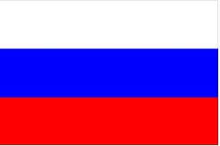

Президентство в России –совершенно новый в исторической ретроспективе политический институт. Его появление в 1991 г. стало реакцией на процессы децентрализации и суверенизации республик, входивших в единое государство – Советский Союз. В то же время специфика российского президентства определена исторической логикой персонификации власти, что является закономерным следствием строго иерархичной политической системы – будь то имперский, советский или современный период.
Общие
характеристики института президентства
При
всем разнообразии имеющихся в современном мире моделей президентства можно
выделить ряд общих характеристик этого института:
конституционное
разграничение полномочий и обязанностей президента, парламента, судебных
институтов;
президент
и парламент избираются отдельно, всенародно (за исключением ряда парламентских
республик, где президент избирается парламентом, например, ФРГ). Такая процедура
определяет равную легитимность и ответственность
институтов;
президент
может быть одновременно и главой государства и главой правительства (США),
формировать и отправлять в отставку правительство;
парламент
не имеет права отзыва правительства и президента, за исключением процедуры
импичмента;
парламент
обладает всей полнотой законодательной власти, президент может не иметь
законодательной инициативы (США), но обладает правом вето, которое
преодолевается двумя третями голосов;
исключено
совмещение правительственного кресла и мандата
парламентария.
В
идеальном смысле президентство следует рассматривать как институт, имеющий все
возможности для легитимации политического режима, особенно в переходный период;
эффективно выполняющий функции социального арбитража и патронажа; как структуру,
способную сплотить вокруг себя политических участников с различными
интересами.
Базовые
черты российского президентства
Российский
институт президентской власти имеет следующие базовые
характеристики:
всеобщие
равные прямые альтернативные выборы президента и
парламента;
президент
избирается сроком на шесть лет; Президентом РФ может быть избран только
гражданин РФ не моложе 35 лет, постоянно проживающий в России не менее 10
лет;
одно
и тоже лицо не может занимать должность президента РФ более двух сроков
подряд;
президент
является главой государства и гарантом Конституции РФ;
президент
является Верховным Главнокомандующим Вооруженными Силами
РФ;
в
случае агрессии против России или непосредственной угрозы агрессии президент
вправе вводить на территории РФ военное положение с незамедлительным сообщением
об этом палатам Федерального Собрания РФ;
президент
в установленном Конституцией РФ порядке принимает меры по охране суверенитета
РФ, ее независимости и государственной целостности; определяет основные
направления внутренней и внешней политики;
президент
назначает с согласия Государственной Думы Председателя Правительства РФ и
утверждает структуру федеральных органов власти;
правительство
несет двойную ответственность перед парламентом и президентом, но решение об
отставке правительства принимает президент;
президент
назначает выборы в Государственную Думу и вправе распустить ее в случаях и
порядке, предусмотренных Конституцией РФ;
президент
вносит законопроекты в Государственную Думу; федеральные законы вступают в силу
после подписания их президентом;
указы
президента имеют силу закона;
президент
имеет право отлагательного вето на законопроекты
парламента;
у
парламента и президента разные сроки деятельности: пять и шесть лет
соответственно;
президент
прекращает исполнение полномочий досрочно в случае его отставки, стойкой
неспособности по состоянию здоровья осуществлять полномочия или в результате
отрешения от должности (импичмента). Конституция РФ дает четкое понимание
процедуры импичмента. Президент
может быть отрешен от должности Советом Федерации только на основании
выдвинутого Государственной Думой обвинения в государственной измене или
совершении иного тяжкого преступления, подтвержденного заключением Верховного
Суда РФ о наличии в действиях Президента РФ признаков преступления и заключением
Конституционного Суда РФ о соблюдении установленного порядка выдвижения
обвинения (Ст. 93).
Становление
и развитие института президентства в России
Становление
и развитие российского института президентства тесным образом связано с
советским периодом. Ход и последствия политической реформы команды М.С.
Горбачева поставили перед руководством страны вопрос о поиске новых форм
управления обществом и государством. Ликвидация партийной монополии на власть
ослабила всю политическую систему огромной страны. Пост Генерального Секретаря ЦК КПСС как
централизующий и легитимирующий политическую систему институт утратил свою
актуальность. В той ситуации естественным выходом из сложившейся ситуации
структурного кризиса руководству страны представлялось усиление центральной
власти посредством создания новых, неассоциированных с коммунистическим прошлым
структур.
Аргументы
в пользу введения поста президента СССР были следующие: население требует
решительных мер, направленных на обеспечение должного государственного и
общественного порядка; на нормализацию положения в экономике; на решение
неотложных социально-экономических и других проблем; а также в целях создания
более четкой системы властных отношений, в которой именно президент будет
выступать связующим звеном между законодательной и исполнительной ветвями
власти. Во многом, создание института президентской власти было вынужденно
быстрым и потому концептуально непродуманным.
Особенность
советского и начального этапа становления российского президентства заключалась
так же в том, что этот институт создавался под конкретных людей, как правило,
бывших партийных руководителей. Первые выборы Президента СССР, как и президентов
союзных республик, были непрямыми.
14
марта 1990 г. депутаты Ш внеочередного Съезда народных депутатов СССР приняли
Закон СССР «Об учреждении поста Президента СССР и внесении изменений и
дополнений в Конституцию СССР». После внесения дополнений по Конституции СССР
Президент СССР должен был избираться гражданами страны путем прямого и тайного
голосования сроком на 5 лет. Однако в порядке исключения первые выборы
Президента СССР были проведены Съездом народных депутатов СССР. Новый глава
государства – первый и единственный президент СССР – был избран 15 марта 1990
года. Им стал М.С. Горбачев, за которого проголосовало 59,2 % депутатского
корпуса. Два других кандидата – Н.И. Рыжков и В.В. Бакатин – накануне
голосования сняли свои кандидатуры.
На
этом же съезде была отменена 6-я статья Конституции СССР, закреплявшая ведущую
роль КПСС как института
определявшего «генеральную перспективу развития общества, линию
внутренней и внешней политики СССР». Тем самым были разрушены необходимые для
любого государства механизмы организации и управления, а новые – президентские
структуры – еще не начали свою работу.
Становление
собственно российского института президентства происходило в условиях
политической децентрализации и суверенизации не только республик СССР, но и
регионов РСФСР. И если союзный институт мыслился его инициаторами как
цементирующий «раствор» начинавшей рушиться системы, то республиканские и,
прежде всего, российский был создан в качестве инструмента ликвидации
централизованной системы власти. Об этом прямо заявил один из ближайших
соратников Б.Н. Ельцина: «целью
создания института президентства в РСФСР было изменение всей существующей
системы власти, отстранение от политического руководства не только КПСС, но и
ликвидация Советов» (Бурбулис Г.Э.
Президентство выбирает новое поколение // Этика успеха. 1995. № 5. С.
252-254.).
Формальное
начало российскому институту президентства положили Декларация о государственном
суверенитете РСФСР (принята 12 июня
1990 г. Первым Съездом народных депутатов РСФСР), итоги референдума 17 марта
1991 г. (за введение должности президента высказались 69,8 % пришедших на
референдум или 52,4 % избирателей РСФСР) и Закон РСФСР «О выборах президента
РСФСР» (принят Верховным Советом РСФСР 24 апреля 1991 г.).
Первые
выборы президента РСФСР (и единственные с таким названием страны) состоялись 12
июня 1991 года. В отличие от последующих выборов, вместе с президентом РСФСР
избирался вице-президент РСФСР – аналогично системе выборов президента США, где
кандидатура вице-президента выставляется вместе с кандидатурой президента как
единый пункт избирательного бюллетеня. Кроме того, президент избирался на
пятилетний срок и хотя в 1993 г. он был сокращен до четырех лет, переходные положения новой Конституции
РФ предусматривали, чтобы Ельцин пробыл в должности весь первоначальный срок.
Поэтому следующие выборы состоялись в 1996 г., а не в 1995
году.
12
июня 1991 г. пара Борис Ельцин – Александр Руцкой победила в первом туре,
получив 57,3 % голосов. Второе место заняла пара Николай Рыжков – Борис Громов,
получившая 16,9 %. Третье место завоевали Владимир Жириновский с Андреем Завидия
(7,8 %).
В
отличие от союзного президента Ельцин обладал безоговорочной легитимностью.
Легитимным был и сам институт президентства, как отмечалось выше, за его
введение высказалось большинство граждан РСФСР. Однако получить власть оказалось
гораздо легче, чем ею распорядиться. Неолиберальные реформы, «шоковая терапия»,
приватизация, приведшие все вместе к колоссальному обнищаю большинства населения
страны и дополненные ростом сепаратистских настроений в ряде регионов России,
переросших в полномасштабную войну на Северном Кавказе, естественным образом
отразились на легитимности режима и личной власти первого президента. Серьезным
ударом по репутации государственной власти в лице Ельцина стал конституционный
кризис 1993 г., закончившийся 4 октября расстрелом Белого дома (место заседания
Верховного Совета республики). В результате рейтинг действующего президента к началу 1996 г.
не поднимался выше 6 %.
На
выборах 1996 г. сохранить свой пост Ельцину удалось лишь со второй попытки. В
первом туре действующий президент набрал 35,38 % голосов. Его главный конкурент
Г.А. Зюганов – 32,03 %. Третье место занял А.И. Лебедь – 14,52 % голосов
избирателей. Второй тур состоялся 16 июня 1996 г. и принес Ельцину победу –
53,88 % голосов, причем значительную поддержку ему оказал Лебедь, призвавший
своих избирателей голосовать за действующего президента. Зюганов набрал 40,31 %
голосов.
Однако,
несмотря на победу на выборах, кризис президентства Ельцина был
очевиден. В результате 31 января 1999 г. Ельцин подписал указ об отставке и
публично заявил об этом в телеобращении. Президент пояснил, что уходит «не по
состоянию здоровья, а по совокупности всех проблем»и попросил прощения у граждан
России за несбывшиеся мечты и неосуществленные надежды. Тогда же исполняющим
обязанности президента был назначен председатель Правительства России В.В.
Путин, который сразу же после заявления Ельцина об отставке выступил с
новогодним обращением к гражданам России. В тот же день Путин подписал указ,
гарантирующий первому президенту неприкосновенность, защиту от судебного
преследования, а также полное государственное обеспечение его и его семьи.
Следующие
президентские выборы состоялись согласно Конституции РФ – не позднее трех
месяцев с момента досрочного прекращения исполнения полномочий прежнего
президента (Ст. 92) – 26 марта 2000 года. В первом туре, набрав 52,94 % голосов,
победу одержал самовыдвиженец – исполняющий обязанности Президента РФ – В.В.
Путин. На следующих выборах – 14 марта 2004 г. – Путин набрал 71,31 % голосов,
что является ярким свидетельством поддержки его политики большинством населения
страны. Не менее убедительную
победу на выборах 2 марта 2008 г. одержал кандидат от партии «Единая Россия»
Д.А. Медведев – 70,28 % голосов избирателей.
Очередные
президентские выборы состоялись 4 марта 2012 года. Беспартийный кандидат,
выдвинутый «Единой Россией», на тот момент действующий премьер-министр страны
В.В. Путин, набрав 71,31 % голосов,
повторил результат 2004 г. и был избран на шестилетний срок. Согласно
Закону Российской Федерации от 30 декабря 2008 г. № 6-ФКЗ «Об изменении срока
полномочий Президента Российской Федерации и Государственной Думы» срок
полномочий Президента России был увеличен с четырех до шести
лет.
На
выборах президента России в 2018 году Владимир Путин набрал 76,69% голосов.
Таким образом, он был переизбран на новый срок. Таковы итоги выборов, которые
подвел ЦИК РФ.
Следом
идет кандидат от КПРФ, бизнесмен Павел Грудинин, за него проголосовали 11,77%
избирателей. Третьим стал лидер ЛДПР Владимир Жириновский, получивший 5,65%
голосов.
За
кандидата от партии «Гражданская инициатива» Ксению Собчак свой голос отдали
1,68% россиянин. А у главы федерального политкомитета партии «Яблоко» Григория
Явлинского 1,05% голосов.
Остальных
кандидатов поддержали менее одного процента граждан. Так, кандидат от Партии
роста, бизнес-омбудсмен Борис Титов заручился поддержкой 0,76% избирателей,
лидер партии «Коммунисты России» Максим Сурайкин – 0,68%, кандидат от партии
«Российский общенародный союз» Сергей Бабурин – 0,65%.
Центризбирком
признал президентские выборы состоявшимися и
действительными.
Выборы
главы государства прошли в России 18 марта. Ранее глава ЦИК Элла Памфилова
похвалила членов избирательных комиссий за достойное проведение выборов. По ее
словам, нарушений на них было ничтожно мало.
Структура
института президентства в России
Как
и любой другой институт политической системы, президентство в России имеет
сложную и разветвленную структуру. Главными структурными элементами – точками
опоры – института президентства являются Администрация Президента Российской
Федерации (формирует Президент), Совет Безопасности (формирует и
возглавляет президент), полномочные представители Президента РФ (назначает
президент).
К
главным функциям Администрации относятся обеспечение деятельности Президента РФ,
Совета Безопасности, консультативных и совещательных органов при президенте и
организация их взаимодействия с органами законодательной и исполнительной
власти; подготовка предложений, рекомендаций и прогнозно-аналитических
материалов по стратегии общей политики Российской Федерации; выработка
предложений по законопроектной деятельности Президента РФ; проведение
государственной кадровой политики; разработка мер по разъяснению политики
Президента; осуществление президентского контроля над исполнительной властью;
подготовка, оформление и выпуск документов, подписываемых Президентом и
т.д.
Важнейшей
фигурой российского политического процесса является руководитель Администрации.
Глава Администрации отвечает за прохождение законопроектов, указов и
распоряжений Президента, руководит деятельностью помощников Президента,
пресс-секретаря, начальников главных управлений и руководителей иных
подразделений Администрации, референтов, полномочных представителей, а также
советников Президента.
Роль
руководителя Администрации в современной политической системе определяется также тем, что он представляет
Президенту предложения по персональным назначениям на руководящие должности в
президентской Администрации. Тем самым, он сосредоточивает в своих руках
ключевые функции не только в Администрации Президента, но и во всей системе
исполнительной власти.
Совет
Безопасности Российской Федерации является конституционным совещательным
органом, осуществляющим подготовку решений Президента России по вопросам обеспечения национальной
безопасности, организации обороны, военного строительства, оборонного
производства, военного и военно-технического сотрудничества РФ с иностранными
государствами, по иным вопросам, связанным с защитой конституционного строя,
суверенитета, независимости и территориальной целостности России, а также по
вопросам международного сотрудничества в области обеспечения безопасности
(Положение о Совете Безопасности Российской Федерации. Утверждено Указом
Президента Российской Федерации от 6 мая 2011 г. № 590).
Полномочный
представитель Президента Российской Федерации в федеральном округе является
должностным лицом, представляющим Президента России в пределах соответствующего
федерального округа.
Основными
задачами полномочного представителя являются:
организация
в соответствующем федеральном округе работы по реализации органами
государственной власти основных направлений внутренней и внешней политики
государства, определяемых Президентом;
организация
контроля за исполнением в федеральном округе решений федеральных органов
государственной власти;
представление
Президенту Российской Федерации регулярных докладов об обеспечении национальной
безопасности в федеральном округе, а также о политическом, социальном и
экономическом положении в федеральном округе
(Положение
о полномочном представителе Президента Российской Федерации в федеральном
округе. Утверждено указом Президента РФ от 13 мая 2000 г. №
849).